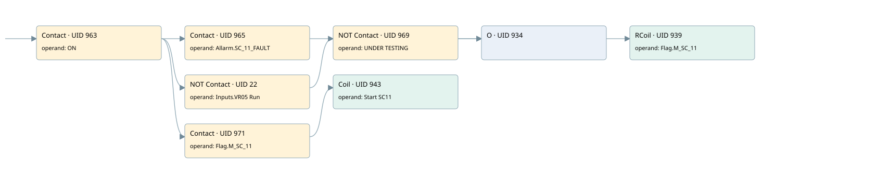

sc11
motors 1 · 검색 색인 순서 34 · 원본 내부 NID 추정 33
백업 PLF 원본의 2809612 바이트 위치에서 복원한 XML. 검색 문서 1963의 객체 키 16102200bc11000000000000와 연결했다. 이름 해석 7/7개. 남은 RefId는 상수 또는 미해석 참조다.
연결 구조 다시 그리기
원본 Part/PCon/Wire를 이용한 연결도다. TIA 화면의 래더 배치 또는 실행 결과를 재현한 그림은 아니다. 핀 연결은 아래 표와 원본 XML을 기준으로 읽는다. 노드 위에 마우스를 두면 피연산자 이름을 볼 수 있다.

접점·코일·블록과 피연산자
| Part UID | Gate | Negated 핀 | 연결 피연산자 |
|---|---|---|---|
| 963 | Contact | operand = ON | |
| 965 | Contact | operand = Allarm.SC_11_FAULT | |
| 22 | Contact | operand | operand = Inputs.VR05 Run |
| 969 | Contact | operand | operand = UNDER TESTING |
| 934 | O | ||
| 939 | RCoil | operand = Flag.M_SC_11 | |
| 971 | Contact | operand = Flag.M_SC_11 | |
| 943 | Coil | operand = Start SC11 |
접점 경로를 펼친 조건식
Contact·O/A·비교기의 원본 연결을 읽기 쉽게 펼친 보조 해석이다. POWER는 전원 레일 시작을 뜻한다. 호출 블록·에지·타이머의 내부 동작과 다중 쓰기 순서는 이 표로 실행 검증하지 않았다. 미해석 핀과 RefId는 원문 연결표에서 확인한다.
| UID | 동작 | 대상 | 원본 접점 경로 | 내용 |
|---|---|---|---|---|
| 939 | RCoil | Flag.M_SC_11 | ((ON AND Allarm.SC_11_FAULT) OR ((ON AND NOT [Inputs.VR05 Run]) AND NOT [UNDER TESTING])) | 조건 성립 시 Reset |
| 943 | Coil | Start SC11 | (ON AND Flag.M_SC_11) | 조건에 따른 Coil 기록 |
원본 배선 연결
| Wire UID | 동일 Wire 연결 끝점 |
|---|---|
| 973 | Powerrail {} ↔ Part 963.in |
| 951 | ORef 944 (ON) ↔ Part 963.operand |
| 964 | Part 963.out ↔ Part 965.in ↔ Part 22.in ↔ Part 971.in |
| 952 | ORef 945 (Allarm.SC_11_FAULT) ↔ Part 965.operand |
| 966 | Part 965.out ↔ Part 934.in1 |
| 21 | ORef 23 (Inputs.VR05 Run) ↔ Part 22.operand |
| 24 | Part 22.out ↔ Part 969.in |
| 954 | ORef 947 (UNDER TESTING) ↔ Part 969.operand |
| 970 | Part 969.out ↔ Part 934.in2 |
| 956 | Part 934.out ↔ Part 939.in |
| 958 | ORef 948 (Flag.M_SC_11) ↔ Part 939.operand |
| 959 | ORef 949 (Flag.M_SC_11) ↔ Part 971.operand |
| 972 | Part 971.out ↔ Part 943.in |
| 961 | ORef 950 (Start SC11) ↔ Part 943.operand |
식별자 해석 근거 7개
| ORef UID | RefId | 이름 | IdentXmlPart 파일 | 해석 방법 |
|---|---|---|---|---|
| 944 | 1 | ON | 0602-IdentXmlPart.xml | UID/RID + search-text + NID agreement |
| 945 | 160 | Allarm.SC_11_FAULT | 0604-IdentXmlPart.xml | UID/RID + search-text + NID agreement |
| 23 | 221 | Inputs.VR05 Run | 0604-IdentXmlPart.xml | UID/RID + search-text + NID agreement |
| 947 | 4 | UNDER TESTING | 0602-IdentXmlPart.xml | UID/RID + search-text + NID agreement |
| 948 | 162 | Flag.M_SC_11 | 0604-IdentXmlPart.xml | UID/RID + search-text + NID agreement |
| 949 | 162 | Flag.M_SC_11 | 0604-IdentXmlPart.xml | UID/RID + search-text + NID agreement |
| 950 | 163 | Start SC11 | 0602-IdentXmlPart.xml | UID/RID + search-text + NID agreement |
검색 코드 보조 자료
참조 명칭을 찾기 위한 자료이며 실행 순서나 AND/OR 관계는 위 연결표로 확인한다.
"on" "allarm".sc_11_fault "flag".m_sc_11 "inputs"."vr05 run" "under testing" "flag".m_sc_11 "start sc11"